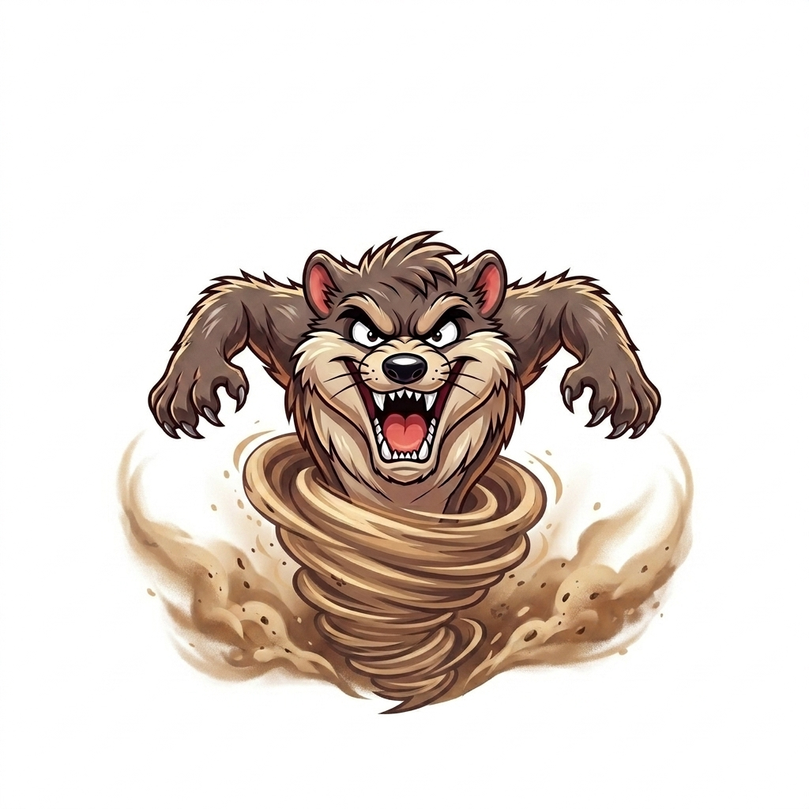

1° DIA: CRIÇÃO DO GITHUB
📅 04 de Junho de 2026 — Nosso encontro com o 1° M foi marcado por muito trabalho prático! A turma se dedicou bastante ao desenvolvimento dos projetos, o que naturally trouxe à tona muitas dúvidas. Esse movimento foi excelente, pois permitiu que os estudantes testassem os limites dos seus códigos, errassem, perguntassem e avançassem juntos na compreensão da lógica da programação.
📅 11 de Junho de 2026 — Dedicamos o dia de hoje para explorar novas mídias e formatos. Usamos o livro didático em sala de aula para entender a fundo toda a estrutura teórica e o planejamento necessários para a criação de um podcast. Foi um momento importante de leitura, debate e organização de ideias antes de partirmos para a parte técnica do projeto.
📅 16 de Junho de 2026 — O dia de hoje foi de muita criatividade e transformação visual! O 1° M começou oficialmente a estilizar o blog, deixando as páginas com uma identidade única. Aprendemos a usar a tag <style> para aplicar cores de fundo, mudar os tons dos textos e fazer as primeiras formatações de design, dando vida nova aos códigos criados nas semanas anteriores.
construção da estrutura básica
Resumo de Códigos Básicos: Guia Rápido de HTML
Para ajudar todo mundo a colocar a mão na massa no laboratório, aqui está o nosso guia de sobrevivência HTML. Use essas tags para estruturar o seu site!
<h1>até<h6>: 🏷️ Títulos e subtítulos. O<h1>é o principal e maior da página.<p>: ✍️ Parágrafo de texto comum.<strong>: ⚠️ Deixa o texto em negrito para dar destaque.<em>: ✨ Deixa o texto em itálico para dar ênfase.<ul>: 📋 Cria uma lista com marcadores (bolinhas).<ol>: 🔢 Cria uma lista numerada automática (1, 2, 3...).<li>: 🔹 Cada item individual de uma lista (deve ficar dentro de ul ou ol).<br>: ↩️ Quebra de linha simples (não precisa de tag de fechamento).
💡 Dica de ouro: Lembre-se sempre de abrir a tag <tag> e fechar no final do texto usando a barra </tag>!
📅 23 de Junho de 2026 — O 1° M teve uma aula incrível, produtiva e marcada por um espírito muito colaborativo entre todos. Hoje, aprendemos a inserir e formatar imagens diretamente no HTML, explorando também o potencial da inteligência artificial com a geração de imagens no Nano Banana para ilustrar os sites. Para fechar o encontro com chave de ouro, dedicamos a parte final da aula para dar continuidade à construção do nosso podcast, refinando as ideias que logo vão sair do papel. Parabéns pelo trabalho em equipe, turma!